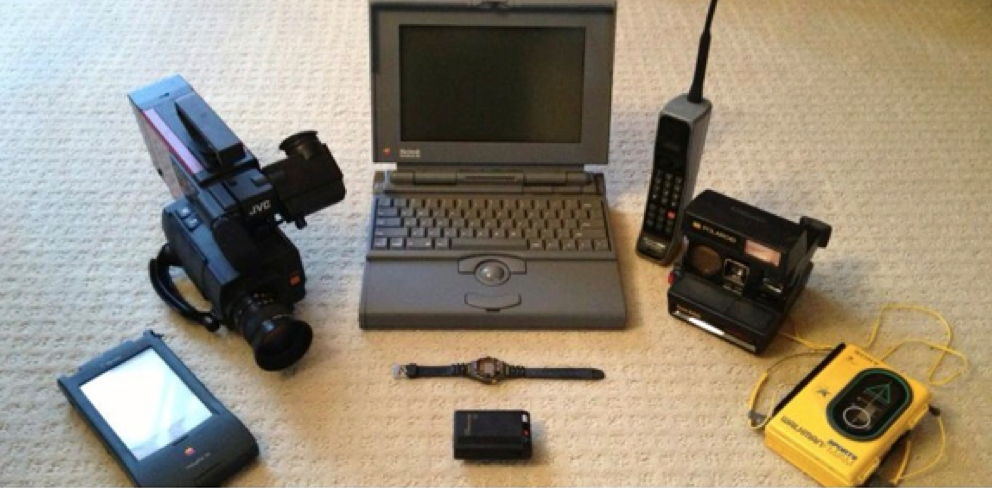

1993:

2013:
If Raymond Kurzweil’s predictions are accurate (and they probably are), in about 10 years, individuals with brain dysfunction will have a number of options to help improve their everyday cognitive functioning. Ramez Naam provides a glimpse into what is already being done to intermingle computer technology and neurology.
In the meantime, we currently have excellent technology, in the form of apps and mobile devices. How can individuals who are currently impaired, benefit from this ubiquitous technology? Surprisingly, there are not many well-designed studies out there to help answer this question. Luckily, there is an excellent systematic review of the assistive technologies for cognition (ATC) literature. Importantly, this paper by Gillespie et al. provides methodological guidance for neuropsychologists who are interested in studying the implementation of mobile technology in their care of patients with cognitive dysfunction.